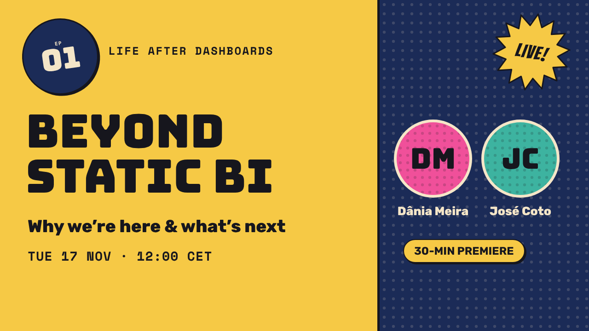

LIVE!
EP01
LAD #01 · Premiere
Beyond Static BI: Why We’re Here & What’s Next
Tue 17 Nov 2026 · 12:00–12:30 CET
Dânia Meira & José Coto
Register on LinkedIn
30 MIN
Conversations about the future of analytics
Most dashboards are where metrics go to die.
AI agents promise to change that. Unless they hallucinate your revenue first. Join us for a monthly 30-minute live conversation about the reality of agentic analytics, practical evaluation frameworks, their impact on the analytics function, and what it takes to build AI data systems executives can trust.

NEW!The live show
A monthly live show on LinkedIn at lunch break about what happens after the dashboard ships: adoption, trust, decisions and the human side of data. Register to get the link and the recording.
LAD #01 · Premiere
Tue 17 Nov 2026 · 12:00–12:30 CET
Dânia Meira & José Coto
It is undergoing its biggest transformation in twenty years. We are moving away from passive, static dashboards toward conversational and autonomous AI agents.
In this 30-minute kickoff edition, Dânia and José discuss:
The show is hosted by two people who care about making data understandable.
Dânia Meira
Data literacy and analytics consultant and trainer.
José Coto
Co-host of Life After Dashboards.
Missed a live show? Catch up on the latest episode, or tell us what you would like to talk about and join as a guest.